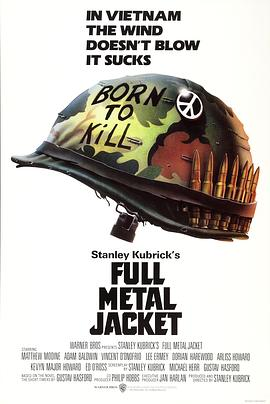

全金属外壳 / Full Metal Jacket
又名：烈血焚城(港) / 金甲部队(台) / 金甲战士
作品信息
| 导演 | 斯坦利·库布里克 |
| 编剧 | 斯坦利·库布里克 / 迈克尔·海尔 / 古斯塔夫·哈斯福德 |
| 主演 | 马修·莫迪恩 / 亚当·鲍德温 / 文森特·多诺费奥 / 李·厄米 / 道林·海伍德 / Kevyn Major Howard / 艾利斯·霍华德 / 埃德·欧罗斯 / 约翰·特里 / Kieron Jecchinis / Kirk Taylor / 蒂姆·科尔切里 / Jon Stafford / 布鲁斯·博阿 / Ian Tyler / 索尔·洛佩斯 / 帕皮隆·苏索 / 马库斯·达米科 / 菲利普·贝利 / 斯蒂夫·哈德森 / David Parry / 克里斯·迈巴赫 |
| 类型 | 剧情 / 战争 |
| 制片国家/地区 | 英国 / 美国 |
| 语言 | 英语 / 越南语 |
| 上映日期 | 1987-06-17 |
| 片长 | 116 分钟 |
| IMDb | tt0093058 |
最后一次看到是 2026-08-12T21:11:07+08:00 · 豆瓣原页